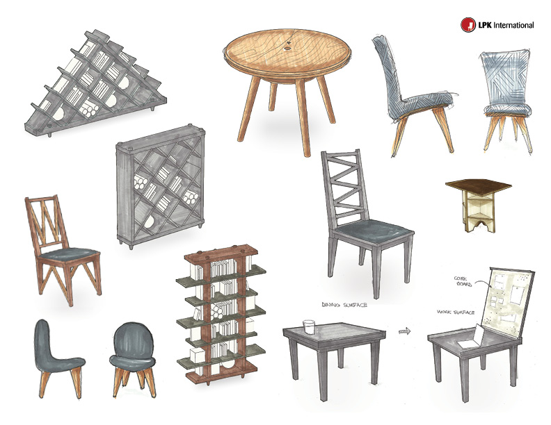

LPK
As a design intern with LPK Interational, my experiences included developing residential mass-market furniture concepts through research, ideation sketching, modeling, and rendering.

Ideation Sketching
Furniture concepts were developed and presented quickly using ideation sketches.

Techincal Drawings
Once a concept had been approved for further development, technical drawings were made to understand scale and manufacturing possibilities.

W Group
A series of coffee tables were explored using the formal influence of the letter 'W'.

Entry Sets
These residential entry furniture pieces provide cleanly-styled and useful storage options when entering or exiting your home.

Partition Shelves
Ideal for someone living in a studio space, the partition shelf stylishly provides visual privacy whilst functioning as a place to store/display possessions

Dining Desk
The dining desk targets the young professional who often works from home and whose limited space demands a high level of versatility in his or her furniture.

Nesting Saddle Stools & Expanding Table
Targeting the space and budget-conscious, nesting saddle stools provide seating for two that can be stored using the space of one. When paired with a folding gateleg dining table, this set allows a couple to accomodate dinner guests comfortably without sacrificing their limited space.